Emma Smukule 1886–1970
Peter's great-grandmother.
Also recorded as Emma Sirlaka; Emma Smukulis; Erna Smukul (1911 marriage list, a clerk's slip); Māte (memoir); Emma Smukule (married name Sirlaks).
Emma Smukule was born on 6 Jan 1886 in Rauna, Cēsis district, Vidzeme, Latvia6, the daughter of Dāvis Smukuls and Marija Kajone2,6,29. She married Mārtiņš Vilhelms Sirlaks on 5 May 1911 in St Martin's church, Rīga, Vidzeme, Latvia29. She left Latvia in 194419. She arrived at Boston, Massachusetts, United States on 7 Jul 194922,23. She died on 9 Oct 1970 in Toronto, Ontario, Canada14,24,25 and was buried at York Cemetery, Toronto, Ontario, Canada26,27.
Family
- Parents
- Dāvis Smukuls and Marija Kajone documented
- Husband
- Mārtiņš Vilhelms Sirlaks 1883–1942 · married on 5 May 1911 in St Martin's church, Rīga, Vidzeme, Latvia29
- Children
- Elvīra Antonija Sirlaka 1912–2011 documented
- Mirdza Augusta Sirlaka 1916–2010 documented
- Biruta Zeltīte Sirlaka 1919–2002 documented
Life events
| Event | Date | Place and details |
|---|---|---|
| Born | 6 Jan 1885 | Vecrauna, Rauna, Cēsis district, Vidzeme, Latvia2,3,4 |
| Born | 6 Jan 1885 | Branti (Brantu muiža), Vidzeme, Latvia5 |
| Born | 6 Jan 1886 | Rauna, Cēsis district, Vidzeme, Latvia Old Style (Julian) date: 25 Dec 1885 Preferred version: Her baptism (Rauna births 1886 no. 33, a primary record naming both parents, Dahw Smukkul and Marie geb. Kahjon) gives born 25 Dec 1885 (Julian) = 6 Jan 1886. The DP-2 card's '6.I 1885' mixes the Gregorian day with the Julian year; the memoir (Vecrauna, ¶9) agrees on Rauna parish. 'Branti' on her 1950 declaration (and the 1947 Regensburg list) is not named in the register.6 |
| Baptised | 14 Feb 1886 | Rauna, Cēsis district, Vidzeme, Latvia Old Style (Julian) date: 2 Feb 18866 |
| Lived | bet 5 May 1911 and 1914 | Torņakalns, Rīga, Vidzeme, Latvia8 |
| Married | 5 May 1911 | with Mārtiņš Vilhelms Sirlaks St Martin's church, Rīga, Vidzeme, Latvia Old Style (Julian) date: 22 Apr 191129 |
| Lived | bet 1914 and 1919 | Vinterkalns, Cēsis, Cēsis district, Vidzeme, Latvia9 |
| Lived | 1914 | Cēsis, Cēsis district, Vidzeme, Latvia10 |
| Work | bet 1944 and 1945 | Regensburg, Bavaria, Germany 'Landarbeiterin' (farm labourer) in Landkreis Regensburg; 'House wife' (DP-2, 1945); 'housekeeper' (IRO roll, 1949)17 |
| Left | 1944 | Latvia19 |
| Lived | bet 16 Sep 1945 and 22 Jun 1949 | Haunstetten DP camp, Augsburg, Bavaria, Germany2 |
| Note | 16 Sep 1945 | Marital status 'Widowed' on her DP-2 card (registered 16.IX.1945), so her husband Mārtiņš Sirlaks had died by then. This fits the memoir, where he is not in the 1944 party. The 1949 roll and manifest also say W.2 |
| Left | 28 Jun 1949 | Bremerhaven, Germany20,21 |
| Arrived | 7 Jul 1949 | Boston, Massachusetts, United States22,23 |
| Lived | 13 Jul 1949 | Liberty Township, Mercer County, Ohio, United States11,12 |
| Lived | bet 1951 and 1959 | Tiffin, Ohio, United States13 |
| Lived | Oct 1970 | Southfield, Oakland County, Michigan, United States14,15,16 |
| Died | 9 Oct 1970 | Toronto, Ontario, Canada14,24,25 |
| Buried | 13 Oct 1970 | York Cemetery, Toronto, Ontario, Canada26,27 |
| Origin | Latvia According to the family's 2015 tree7 | |
| Work | Cēsis, Cēsis district, Vidzeme, Latvia Helped in Mārtiņš’s food shop in Cēsis. The memoir gives NOTHING on her maiden name, parents or siblings (no Smukule/Smukuls anywhere in the text).18 | |
| Note | Rauna, Cēsis district, Vidzeme, Latvia NEGATIVE: no child of Dahw Smukkul × Marie Kahjon (and no other Smukkul child) in Rauna Latvian births 1886 nos. 66–261 (img 315–334), 1887 nos. 213–320 (img 365–376), 1888 nos. 1–136 (img 377–391), 1889 nos. 276–327 (img 436–441) and 1890 nos. 1–146 (Jan–Jun 1890, img 441–455; right page of 455…28 |
Photographs
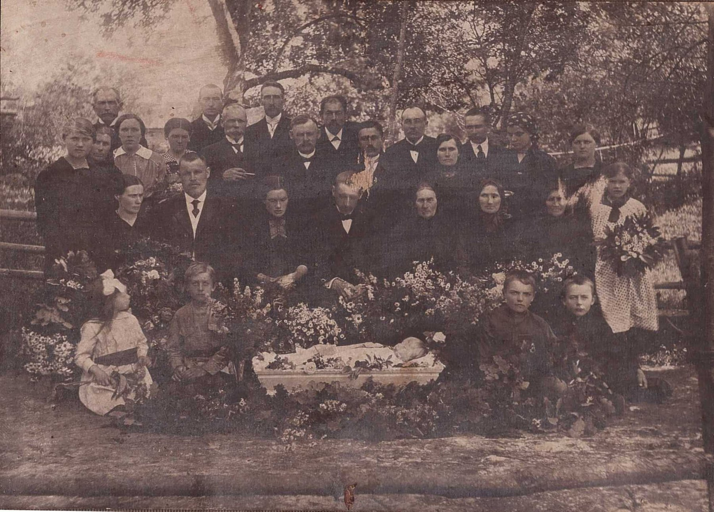

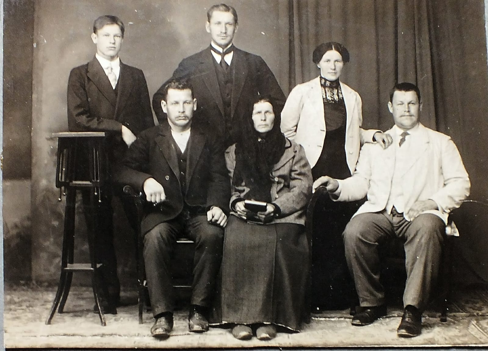

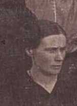
Records
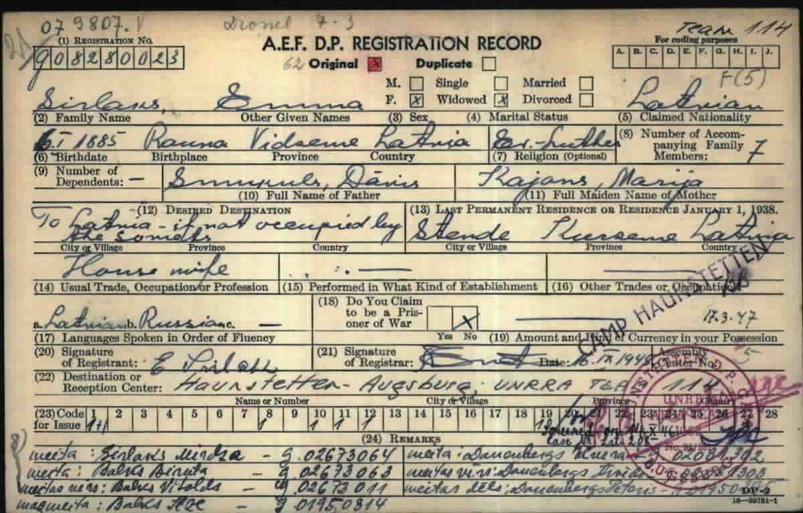
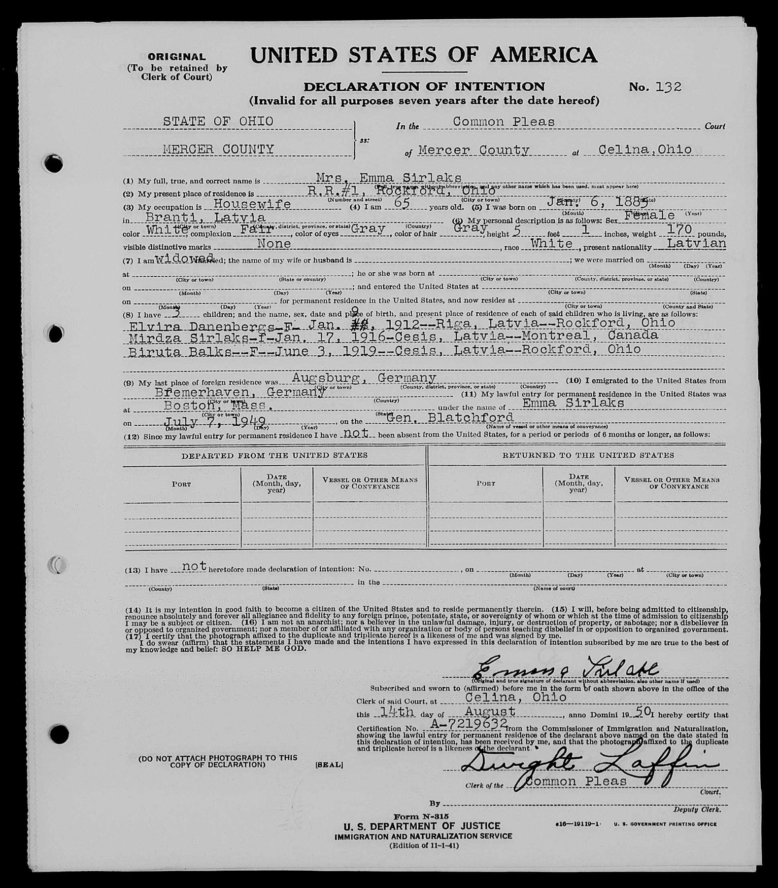


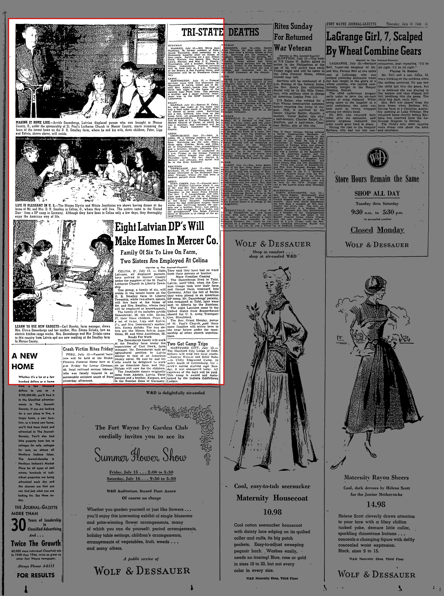
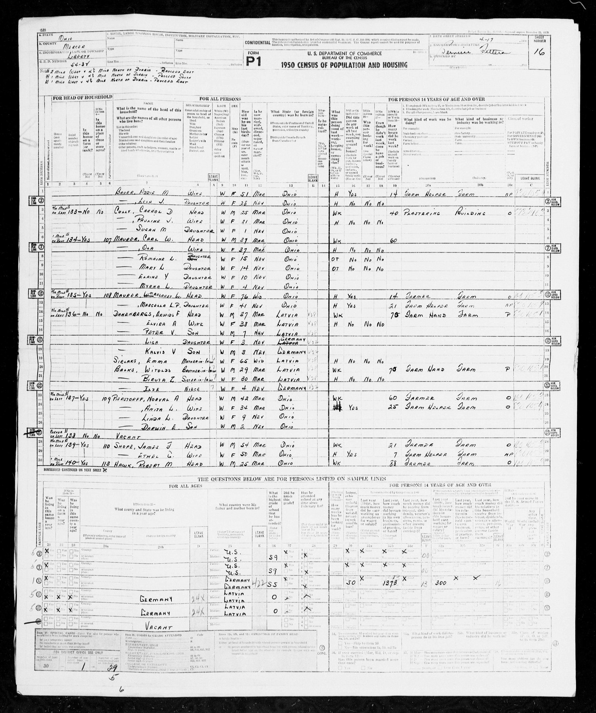
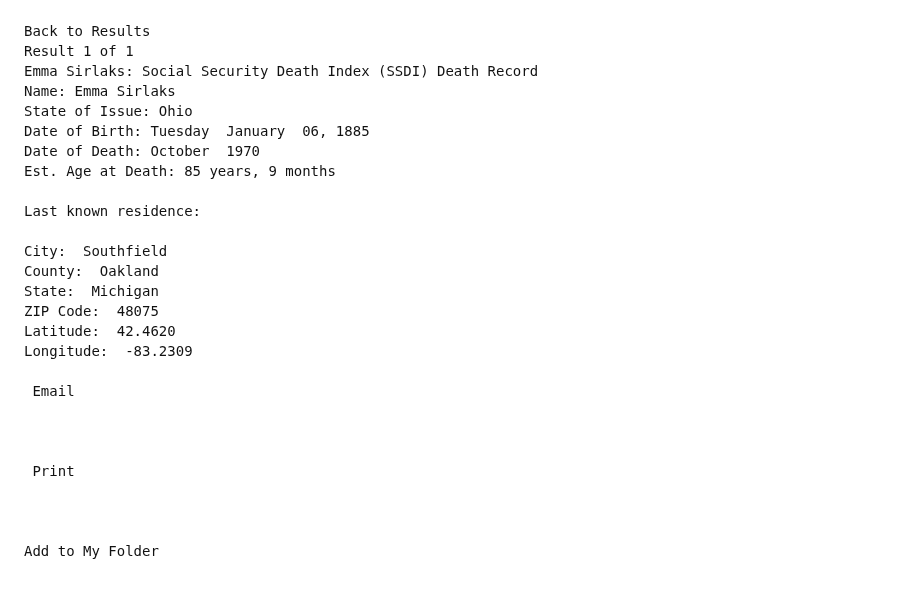
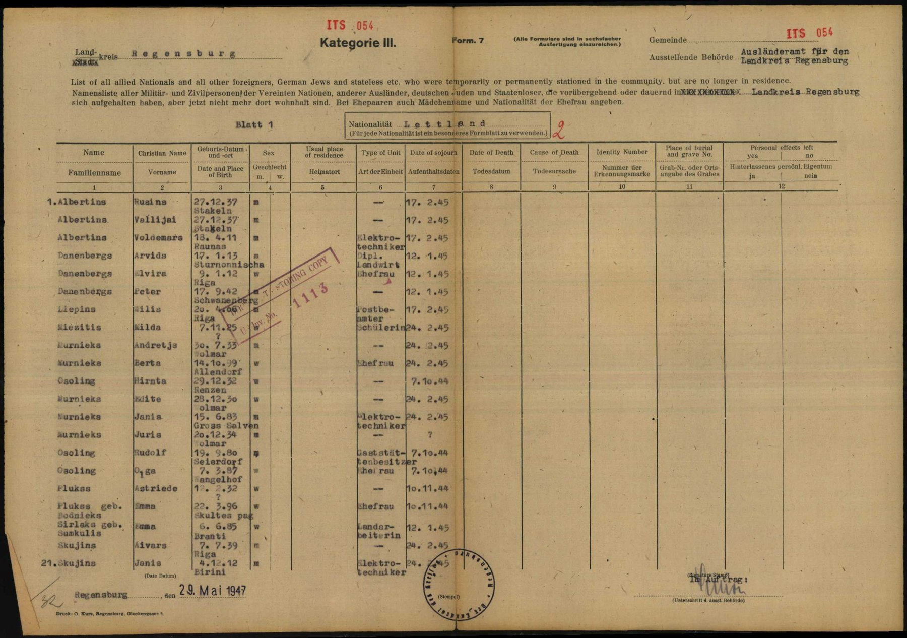
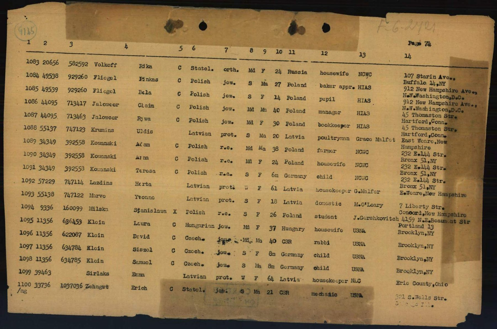
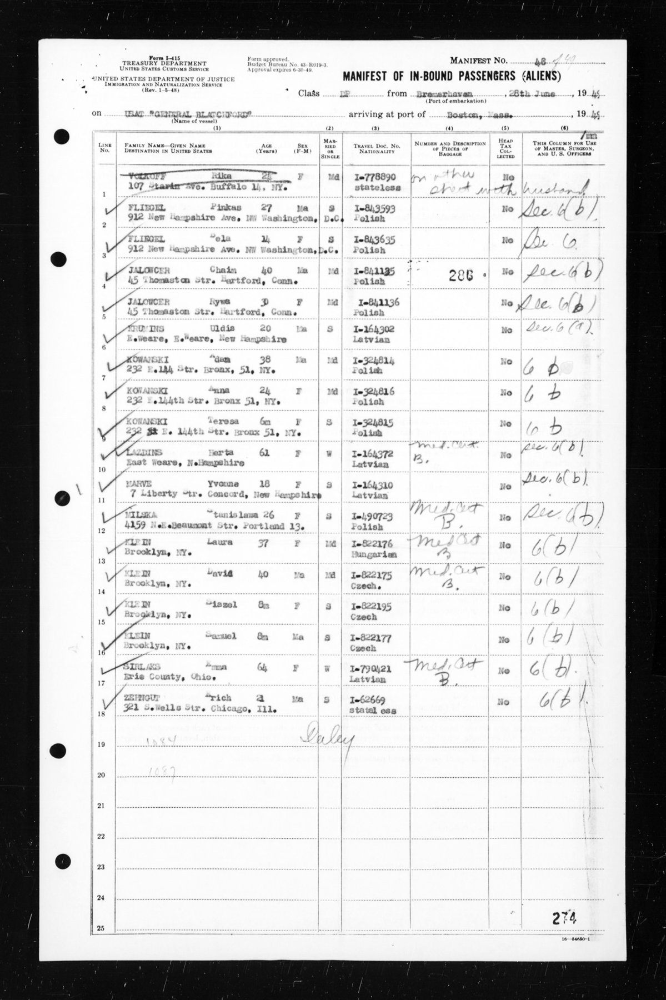
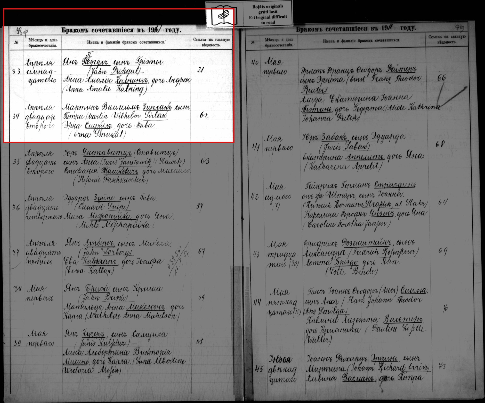
Open questions
- Anna Smukule (b. 3 Sep 1889 Rauna; godmother to Emma's daughter Elvīra, 1912): Emma's sister Confirmed
- Emma Smukule b. 25 Dec 1885 Jul. = 6 Jan 1886, Rauna; parents Dāvis Smukuls + Marija Kajone (Kahjon) Confirmed
- Mārtiņš × Emma Smukule marriage Confirmed
- Oto Smukulis, b. 1890 Rauna, d. 1964 (exile press): Emma's brother? Ruled out
Sources
- MyHeritage family tree 'Dzimta' of Peter's third cousin (his family site), member GEDCOM export of 26 Oct 2026, I500140 (person-6500140), GEDCOM lines 9207–9269.
NAME Emma /Smukule/ · _MARNM Sirlaks
- AEF DP Registration Record, Sirlaks Emma, Reg. No. 908280023 (original; duplicate is ObjId 69117903), DE ITS 3.1.1.1, folder DP3761 (03010101 23 169), DocID 69117906.
Sirlaks Emma | F | Widowed | 6.I 1885 Rauna Vidzeme Latvia | Ev.-Luther | Smukuls, Dāvis | Kajans [?], Marija | Stende Kurzeme Latvia | House wife | Date: 16.IX.1945
DP-2 (original and duplicate): '6.I 1885 Rauna'. Conflicts: the Regensburg list (DocID 70184107) has '6. 6.85 Branti [?]'. The memoir says she was born in Vecrauna (Rauna parish). 'Branti' [?] may be a farm or estate name; unidentified.
- My Life and Times (1912–1949), ¶9.
my mother in Vecrauna (Old Rauna) and my father in Jaunrauna (New Rauna)
- MyHeritage family tree 'Dzimta' of Peter's third cousin (his family site), member GEDCOM export of 26 Oct 2026, I500140 (person-6500140), GEDCOM lines 9207–9269.
BIRT · 6 JAN 1885
Date: a Gregorian date: the same day as ours. His record match: ASV Sociālās Apdrošināšanas Miršanu Indekss (SSDI), https://www.myheritage.lv/research/collection-10002/asv-soci%C4%81l%C4%81s-apdro%C5%A1in%C4%81%C5%A1anas-mir%C5%A1anu-indekss-ssdi?itemId=39537609&action=showRecord: 'Emma Sirlaks | Dzimšana: 6. Jan 1885 | Miršana: Okt 1970 | Pēdēja dzīves vieta: Southfield, Michigan 48075, USA | SSN izsniegusī pavalsts: Ohio'. His record match: ASV Sociālās Apdrošināšanas Miršanu Indekss (SSDI), https://www.myheritage.lv/research/collection-10002/asv-soci%C4%81l%C4%81s-apdro%C5%A1in%C4%81%C5%A1anas-mir%C5%A1anu-indekss-ssdi?itemId=39537609&action=showRecord: 'Emma Sirlaks | Dzimšana: 1885.gada 6. Jan | Miršana: 1970. Okt | Pēdēja dzīves vieta: Southfield, Michigan 48075, USA | SSN izsniegusī pavalsts: Ohio'.
- Declaration of Intention No. 132, Mrs. Emma Sirlaks.
Mrs. Emma Sirlaks … Housewife … 65 … Jan. 6, 1885 in Branti, Latvia … I am widowed … Elvira Danenbergs-F- Jan. [overwritten] 1912--Riga, Latvia--Rockford, Ohio / Mirdza Sirlaks-f-Jan. 17, 1916-Cesis, Latvia--Montreal, Canada / Biruta Balks--F--June 3, 1919--Cesis, Latvia--Rockford, Ohio
Declaration No. 132, Celina, Ohio, 14 Aug 1950: housewife, 65, widowed; 5 ft 1 in, 170 lb, gray eyes, gray hair. Three children listed: Elvira Danenbergs (Riga, Jan 1912); Mirdza Sirlaks (17 Jan 1916, Cēsis, then in Montreal); Biruta Balks (3 Jun 1919, Cēsis, Rockford). Same ship, port and date as Arvīds. Certification A-7219632. The family memory is that she was born in Vecrauna. "Branti" may be a homestead in Vecrauna/Rauna parish. Unverified.
- Rauna births 1886 no. 33, LVVA f. 235, apr. 7, l. 517, img 311 (right page), LVVA f. 235, apr. 7, l. 517, image 311.
1885 December fünf u. zwanzig[sten] abends 9 U. | zweiten | 33 Lubar, Lj. Luhzmann[?] / Emma Smukkul / Elt. Kn. Dahw Smukkul u. d. Marie geb. Kahjon, beide lutherisch / Tf. Md. Juhle Meeschit[?], Md. Leene Leepin[?], Jg. August Meeschit[?]
Translation: 1885 December twenty-fifth, 9 in the evening | [baptised on the] second | No. 33, Lubar[?], [farm] Luhzmann[?] / Emma Smukkul / parents: farmhand (Knecht) Dahw Smukkul and his wife Marie née Kahjon, both Lutheran / godparents: maid Juhle Meeschit[?], maid Leene Leepin[?], young man August Meeschit[?]
Born 25 Dec 1885 (Julian), 9 p.m. = 6 Jan 1886 (Gregorian). Baptised 2 Feb 1886 (Julian) = 14 Feb 1886 (Gregorian): the baptism column has 'zweiten' directly beneath entry no. 32's 'Februar zweiten' (img/sf-rauna-1886-dz31-33-dates.jpg). Entry is in the 1886 register.
- Peter's tree, danenberg.sql, 2007–2015, personae 4, provenance.
- Marriage (1911) and baptism of Elvīra Sirlaka (1912) at Rīga St Martin's, Torņakalns.
The first two years of my life were spent in Torņukalns (Tower Hill), a suburb of Rīga. My father, Mārtinš Sirlaks, and my mother Emma Smukulis were both born about 8 km from each other: my mother in Vecrauna (Old Rauna) and my father in Jaunrauna (New Rauna). … At first they both worked in menial jobs, but then my father opened a tavern while mother stayed at home as a housewife. When WWI started in 1914, they left Rīga to escape the anticipated disruptions and disturbances of war and went to Cēsis
Married Mārtiņš Vilhelms Sirlaks at St Martin's Lutheran church in Torņakalns, Rīga on 22 April 1911 Jul. (5 May 1911 Greg.), had their first daughter Elvīra there on 27 December 1911 Jul. (9 January 1912 Greg., baptised at St Martin's on 19 Feb / 3 Mar 1912), and lived in Torņakalns while her husband kept a tavern until World War I broke out in 1914.
- Move from Torņakalns to Vinterkalns outside Cēsis (1914–1919).
When WWI started in 1914, they left Rīga to escape the anticipated disruptions and disturbances of war and went to Cēsis … At first we lived in a rented house in the Vinterkalns area, several km outside of Cēsis. … Mirdza was born in this house. My mother (Māte) fed her cream of wheat
Left Rīga at the outbreak of World War I in 1914 and lived first in a rented house in the Vinterkalns area outside Cēsis, where her second daughter Mirdza was born on 17 January 1916, before buying the house at Lielā Katrīnas iela 13 in Cēsis by 1919.
- My Life and Times (1912–1949), ¶9.
When WWI started in 1914, they left Rīga … and went to Cēsis
- Eight Latvian DP's Will Make Homes In Mercer Co., The Journal-Gazette (Fort Wayne, Indiana), 14 July 1949, p. 13.
The family of six includes Arvids Danenbergs. 36. his wife. Elvira. 37, their three children. Peter. 6, a set of twins. Liga and Kalvis. 2>2, and Mrs Dancnherg’s mother. Mrs. Emma Sirlaks
Translation: The family of six includes Arvids Danenbergs, 36, his wife, Elvira, 37, their three children, Peter, 6, a set of twins, Liga and Kalvis, 2 1/2, and Mrs. Danenbergs's mother, Mrs. Emma Sirlaks.
Residing at the tenant house on the D. R. Smalley farm in Liberty Township, Mercer County, Ohio, after arriving from Bremerhaven aboard the U.S. Army Transport Gen. Blatchford with her daughter Elvira Danenbergs, son-in-law Arvids Danenbergs, and grandchildren Peter, Liga, and Kalvis, caring for the children while Arvids and Elvira worked on the farm.
- Household of Arwids F Danenbergs, Liberty Township, Mercer, Ohio.
Emma Sirlaks: Race = White; Birth 1885 @ Latvia; Residence 1949; Census 10 April 1950 @ Liberty Township, Mercer, Ohio, United States; RelationshipToHead=Mother-in-law; Age=65
After arriving in Boston on 7 July 1949, she lived with the Danenberg family (and from early 1950 the Balks family) on the farm of sponsor Robert M. Hawk (and D. R. Smalley Farms, Rockford post office) in Liberty Township, Mercer County, Ohio, where she was enumerated in the 10 April 1950 US Census and swore her Declaration of Intention in Celina on 14 August 1950.
- Move from the Rockford farm to Tiffin, Seneca County, Ohio.
Labos Hawkus pievīlām pēc gada aiziedami uz Tiffinu,Ohio. … Uzaudzināja ne vien Pēteri un Ilzi,bet arī dvīņus (Cvinīšus,kā viņa sauca).Pateicoties mātei mēs ar Rūtu varējām strādāt,jo bija kas uzmana mazos.
Translation: We let the good Hawks down after a year by leaving for Tiffin, Ohio. … She raised not only Pēteris and Ilze, but also the twins ('Cvinīši', as she called them). Thanks to mother, Rūta and I were able to work, because there was someone to watch the little ones.
Moved with the Danenberg family after about a year on the Hawk farm to Tiffin, Seneca County, Ohio (where Elvīra and Arvīds are recorded at 23 Apple Street in 1953 and on their Rural Delivery 2 Tiffin farm in 1956–1959 R. L. Polk city directories), helping raise Pēteris, Ilze, and the twins Kalvis and Līga while her daughters worked.
- S-fs-JRNP-MMG.
Emma Sirlaks; Death Oct 1970 Southfield, Oakland, Michigan; Birth 06 Jan 1885; age 85; ZIP 48075; issued Ohio
SSDI: born 06 Jan 1885, died Oct 1970, age 85, last residence ZIP 48075 (Southfield), card issued in Ohio. Find a Grave has an "Emma Sirlaks", 1885-1970, age 85, buried in Toronto, Ontario (memorial 276607686), in the same Toronto index as "Mirdza Augeste Gailitis" (1916-2010, memorial 276580240). That is plausibly a burial with her daughter Mirdza's family. There is also an A-file index entry (United States, Index to Alien Case Files, 6FYW-F2RM), so a USCIS/NARA A-file exists.
- Emma Sirlaks: Social Security Death Index (SSDI) Death Record.
Name: Emma Sirlaks State of Issue: Ohio Date of Birth: Tuesday January 06, 1885 Date of Death: October 1970 Est. Age at Death: 85 years, 9 months Last known residence: City: Southfield County: Oakland State: Michigan ZIP Code: 48075
Last known US residence on file with the Social Security Administration at her October 1970 death: Southfield, Oakland County, Michigan 48075 (born 6 January 1885, died October 1970, age 85 years, 9 months; SSN issued in Ohio; her actual place of death on 9 October 1970 was Toronto, Ontario, Canada).
- MyHeritage family tree 'Dzimta' of Peter's third cousin (his family site), member GEDCOM export of 26 Oct 2026, I500140 (person-6500140), GEDCOM lines 9207–9269.
RESI · Southfield, Michigan 48075, USA
His record match: ASV Sociālās Apdrošināšanas Miršanu Indekss (SSDI), https://www.myheritage.lv/research/collection-10002/asv-soci%C4%81l%C4%81s-apdro%C5%A1in%C4%81%C5%A1anas-mir%C5%A1anu-indekss-ssdi?itemId=39537609&action=showRecord: 'Emma Sirlaks | Dzimšana: 6. Jan 1885 | Miršana: Okt 1970 | Pēdēja dzīves vieta: Southfield, Michigan 48075, USA | SSN izsniegusī pavalsts: Ohio'. His record match: ASV Sociālās Apdrošināšanas Miršanu Indekss (SSDI), https://www.myheritage.lv/research/collection-10002/asv-soci%C4%81l%C4%81s-apdro%C5%A1in%C4%81%C5%A1anas-mir%C5%A1anu-indekss-ssdi?itemId=39537609&action=showRecord: 'Emma Sirlaks | Dzimšana: 1885.gada 6. Jan | Miršana: 1970. Okt | Pēdēja dzīves vieta: Southfield, Michigan 48075, USA | SSN izsniegusī pavalsts: Ohio'.
- Kategorie III list of foreigners no longer resident, Landkreis Regensburg, Blatt 1, 29 May 1947, DE ITS 2.1.1.1 BY 125 LET 7 ZM, DocID 70184107.
Danenbergs Arvids 17. 1.13 Sturnonnischa [?] m Dipl. Landwirt 12. 1.45 / Danenbergs Elvira 9. 1.12 Riga w Ehefrau 12. 1.45 / Danenbergs Peter … Schwanenberg m — 12. 1.45 / Sirlaks geb. Sumkulis Emma 6. 6.85 Branti [?] w Landarbeiterin 12. 1.45
'Landarbeiterin' (farm labourer) in Landkreis Regensburg; 'House wife' (DP-2, 1945); 'housekeeper' (IRO roll, 1949)
- Ainas Sirlakas atmiņas ("Vīstuči"), Aina Jurciņa née Sirlaka, Priekuļi, 1998, p. 9, section "PAR PĒTERA UN MARIJAS CETURTO BĒRNU MĀRTIŅU".
kur palīdzēja sieva Emma, ļoti glīta, pilsētnieciska, inteliģenta kundze
Translation: where his wife Emma helped, a very pretty, urbane, cultured lady
Helped in Mārtiņš’s food shop in Cēsis. The memoir gives NOTHING on her maiden name, parents or siblings (no Smukule/Smukuls anywhere in the text).
- Talsi agronomy bureau (1942–1944), Daugavas Vanagu Mēnešraksts, Nr.2 (01.04.1996).
1944.g. Arvīds ar sievu, 2 gadus vecu dēlu Pēteri un sievas māti Emmu Širlaku dodas bēgļu gaitās uz Vāciju.
Translation: In 1944 Arvīds, his wife, their two-year-old son Pēteris and his wife's mother Emma Širlaka fled as refugees to Germany.
Fled to Germany in 1944 with Arvīds, Elvīra and Pēteris (aged 2).
- Ainas Sirlakas atmiņas ("Vīstuči"), Aina Jurciņa née Sirlaka, Priekuļi, 1998, p. 9, section "PAR PĒTERA UN MARIJAS CETURTO BĒRNU MĀRTIŅU".
Meitas kopā ar māti emigrēja uz ASV, kur dzīvo vēl šodien labi un pārticīgi. Emma aizgājusi mūžībā.
Translation: The daughters emigrated with their mother to the USA, where they still live well and prosperously today. Emma has passed away.
Emigration of Emma with her daughters (via DP camps, after 1944) to North America; dead by 1998 (our data: d. 1970 Toronto). "USA" is approximate: Emma and Mirdza were in Canada.
- IRO nominal roll, USAT General Blatchford, 28 June 1949, page 74, DE ITS 3.1.3.2, ref. 8302110, DocID 81660461.
1099 39463 Sirlaks Emma Latvian prot. W F 64 Latvia housekeeper NLC Erie County, Ohio
IRO roll no. 1099, separate European case 39463, no CM/1 number, NLC sponsor, destination Erie County, Ohio. She was added at the end of the roll, which agrees with the memoir: Arvīds had her added to the papers at the last moment (¶42–43).
- Manifest of In-bound Passengers (Aliens), No. 48, USAT General Blatchford, Bremerhaven 28 June 1949 → Boston, NAID 76075234, image 122 of 651, object 76075356, file 41253_B124264-01143.jpg, line 17.
SIRLAKS Emma Erie County, Ohio 64 F W I-790421 Latvian Med. Cert. B. No 6(b)
Manifest 48, line 17; travel document I-790421; age 64; widowed; 'Med. Cert. B.'; destination Erie County, Ohio
- My Life and Times (1912–1949), ¶42–43.
We applied to go to the US, which we entered in July, 1949. … The ship landed in Boston
- Toronto (news column), Laiks, Nr.83 (17.10.1970), p. 2.
Izvadot māc. A. Briedim, 13. oktobrī Jorkas kapsētas latviešu nodalījumā apglabāja 9. oktobrī 85 g. vecumā mirušo Emmu Sirlaku. Viņa pārmaiņus dzīvojusi gan ASV, kur paliek divas meitas ar ģimenēm, gan - pēdējos gados - Toronto pie meitas Mirdzas Gailītes un znota - matēmatikas skolotāja Friča Gailīša, kas mira pērngada septembrī. Emma Sirlaka nedaudzu gadu laikā pārcieta vairākas smagas operācijas, amputācijā zaudējot vispirms vienu, bet pirms diviem gadiem arī otru kāju.
Translation: With Rev. A. Briedis officiating, Emma Sirlaka, who died on 9 October aged 85, was buried on 13 October in the Latvian section of York Cemetery. She had lived alternately in the USA, where two daughters survive with their families, and, in recent years, in Toronto with her daughter Mirdza Gailīte and son-in-law, the mathematics teacher Fricis Gailītis, who died last September. Within a few years Emma Sirlaka underwent several serious operations, losing first one leg and, two years ago, the other to amputation.
Aged 85, so born about 1885. She spent her old age alternately in the USA, where two of her daughters lived with their families, and (latterly) in Toronto with her daughter Mirdza Gailīte and son-in-law Fricis Gailītis, a mathematics teacher who died in September 1969. She had had both legs amputated over the preceding years.
- MyHeritage family tree 'Dzimta' of Peter's third cousin (his family site), member GEDCOM export of 26 Oct 2026, I500140 (person-6500140), GEDCOM lines 9207–9269.
DEAT · OCT 1970 · AGE 85
His record match: ASV Sociālās Apdrošināšanas Miršanu Indekss (SSDI), https://www.myheritage.lv/research/collection-10002/asv-soci%C4%81l%C4%81s-apdro%C5%A1in%C4%81%C5%A1anas-mir%C5%A1anu-indekss-ssdi?itemId=39537609&action=showRecord: 'Emma Sirlaks | Dzimšana: 6. Jan 1885 | Miršana: Okt 1970 | Pēdēja dzīves vieta: Southfield, Michigan 48075, USA | SSN izsniegusī pavalsts: Ohio'. His record match: ASV Sociālās Apdrošināšanas Miršanu Indekss (SSDI), https://www.myheritage.lv/research/collection-10002/asv-soci%C4%81l%C4%81s-apdro%C5%A1in%C4%81%C5%A1anas-mir%C5%A1anu-indekss-ssdi?itemId=39537609&action=showRecord: 'Emma Sirlaks | Dzimšana: 1885.gada 6. Jan | Miršana: 1970. Okt | Pēdēja dzīves vieta: Southfield, Michigan 48075, USA | SSN izsniegusī pavalsts: Ohio'.
- Toronto (news column), Laiks, Nr.83 (17.10.1970), p. 2.
13. oktobrī Jorkas kapsētas latviešu nodalījumā apglabāja
Translation: buried on 13 October in the Latvian section of York Cemetery
Rev. A. Briedis of the Toronto Latvian Eastern (Austrumu) congregation officiated. Mirdza Gailīte was also 'laid to rest in Toronto' in 2010, probably the same plot or section.
- Emma Sirlaks, Memorial 276607686.
Emma Sirlaks 1885 – 1970 York Cemetery Toronto, Toronto Municipality, Ontario, Canada Plot info: Section A, Lot 379
Find a Grave gives 1885–1970, no photo. Mirdza Gailīte (d. 2010) and Fricis Gailītis (d. 1969) may share the lot (to check).
- Rauna births 1886–1890 (partial scan), LVVA f. 235, apr. 7, l. 517, img 315–334, 365–391, 436–455, LVVA f. 235, apr. 7, l. 517, image 315–334.
(none)
Translation: (none)
NEGATIVE: no child of Dahw Smukkul × Marie Kahjon (and no other Smukkul child) in Rauna Latvian births 1886 nos. 66–261 (img 315–334), 1887 nos. 213–320 (img 365–376), 1888 nos. 1–136 (img 377–391), 1889 nos. 276–327 (img 436–441) and 1890 nos. 1–146 (Jan–Jun 1890, img 441–455; right page of 455 at overview only). NOT read: 1886 nos. 262–end and 1887 nos. 1–212 (img 335–364), 1888 nos. 137–end and 1889 nos. 1–275 (img 392–435), 1890 from no. 147 and 1891. Oto Smukulis (b. 1890) is therefore not among Jan–Jun 1890 baptisms; the family may also have moved parish (Emma's farm 'Lubar' read uncertainly).
- Rīga St Martin Latvian marriages 1911, no. 34 (summary list; main register no. 62), LVVA f. 3036, apr. 4, l. 66, image 105 (left page, fol. 98v), LVVA f. 3036, apr. 4, l. 66, image 105.
Бракомъ сочетавшіеся въ 1911 году. | 34 | Апрѣля двадцать второго | Мартинъ Вильгельмъ Зирлакъ сынъ Петра (Martin Wilhelm Sirlak) / Эрна Смукулъ, дочь Дава (Erna Smukul) | 62
Translation: Married in 1911. No. 34, 22 April: Martin Wilhelm Sirlak, son of Pēteris; Erna [Emma] Smukul, daughter of Dāvis. Main register no. 62.
Married 22 Apr 1911 Julian (= 5 May 1911 Gregorian). Groom Martin Wilhelm Sirlak, son of Pēteris; bride written 'Erna' (Эрна / Erna) Smukul, daughter of Dāvis (Дава). The register here is only the year's summary list (no., date, names, fathers, and a reference to no. 62 of the main register, which is not in this volume), so no ages, residence, witnesses or banns. 'Erna' is taken as a clerk's slip for Emma: same clerk writes 'Эмма' plainly at no. 27. Confirms Emma's father's name Dāvis (her US SS record: Dāvis Smukuls) and places the marriage eight months before Elvīra's birth, in the same congregation that baptised her. Corrects the memoir's 'married young': he was 27, she 26.